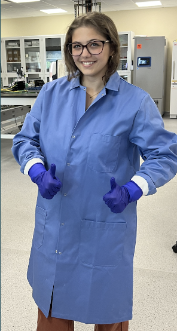

At DEKA, I worked on medical-device system testing and iterative engineering in a cross-functional R&D environment.
My work included device bench testing, support for biological test preparation, and biosensor-focused experimental tasks.
I also initiated early development on 3D-printed bio-relevant gel matrix concepts for cell-seeding workflows.